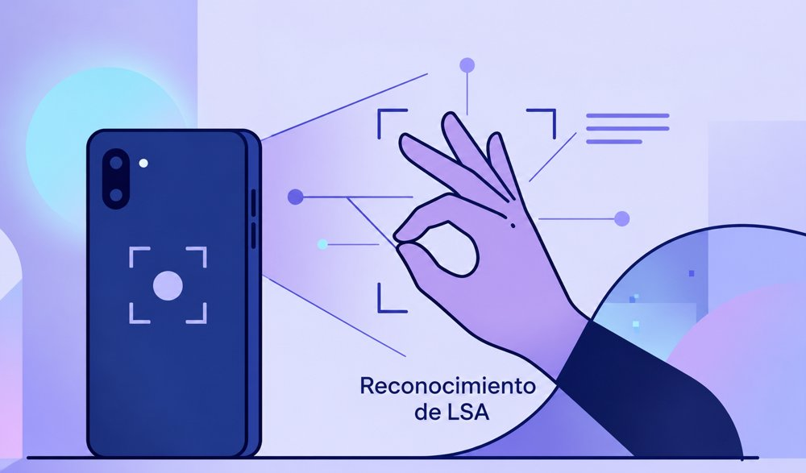
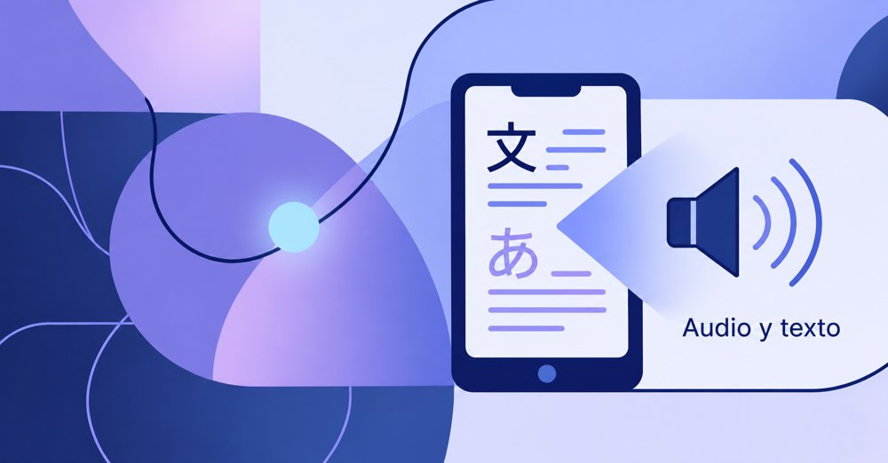
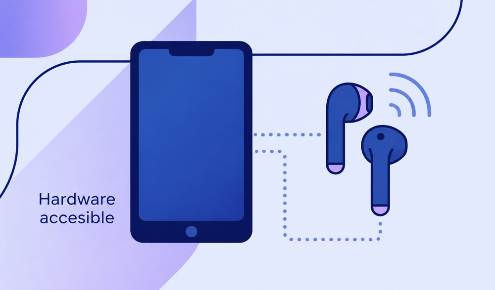

Voz → traducción
La aplicación capta la voz mediante el micrófono, procesa el audio y traduce el contenido al idioma seleccionado.
UniversalTalk es una aplicación móvil inclusiva que combina traducción de voz en tiempo real con reconocimiento de Lengua de Señas Argentina mediante inteligencia artificial.
El objetivo es facilitar conversaciones naturales entre personas oyentes y personas sordas, usando el celular y auriculares inalámbricos convencionales.
La aplicación capta la voz mediante el micrófono, procesa el audio y traduce el contenido al idioma seleccionado.
UniversalTalk combina reconocimiento de voz, traducción y visión artificial para interpretar la información.
La cámara reconoce gestos de Lengua de Señas Argentina y los convierte en voz sintetizada o texto.
Permite que las personas puedan comunicarse en distintos idiomas sin interrumpir constantemente la conversación.

La cámara del celular se utiliza para reconocer gestos de la Lengua de Señas Argentina mediante visión artificial.

La información procesada puede convertirse en voz sintetizada o visualizarse como texto según la necesidad del usuario.

La propuesta utiliza el celular del usuario y auriculares inalámbricos estándar mediante Bluetooth.
UniversalTalk nace para enfrentar la doble barrera que pueden experimentar las personas sordas: la idiomática y la de modalidad comunicativa. Su propuesta busca ser accesible, de bajo costo y útil en ámbitos educativos, médicos, laborales y sociales.
Según el documento del proyecto, las soluciones comerciales existentes se concentran principalmente en traducción de idiomas y no integran el reconocimiento de LSA en el mismo sistema.
UniversalTalk busca transformar la tecnología en un puente entre personas.
Volver al inicio